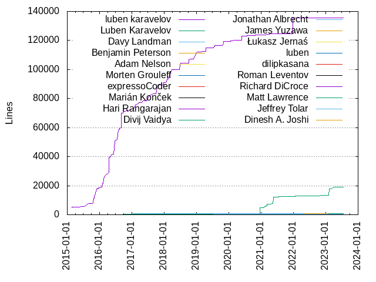
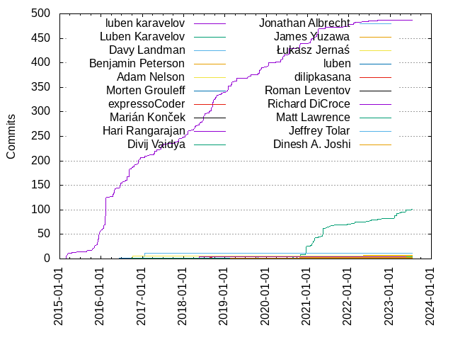

Authors
| Author | Commits (%) | + lines | - lines | First commit | Last commit | Age | Active days | # by commits |
|---|
| luben karavelov | 487 (71.30%) | 135489 | 71892 | 2015-02-25 | 2022-09-11 | 2755 days, 7:43:52 | 221 | 1 |
| Luben Karavelov | 101 (14.79%) | 18975 | 11169 | 2020-07-02 | 2023-07-16 | 1109 days, 3:23:20 | 52 | 2 |
| Davy Landman | 11 (1.61%) | 840 | 83 | 2017-01-11 | 2017-01-23 | 11 days, 20:17:09 | 5 | 3 |
| Benjamin Peterson | 7 (1.02%) | 752 | 318 | 2022-01-18 | 2022-05-12 | 114 days, 3:55:33 | 6 | 4 |
| Adam Nelson | 6 (0.88%) | 486 | 19 | 2016-10-08 | 2016-10-08 | 1:56:22 | 1 | 5 |
| Morten Grouleff | 5 (0.73%) | 736 | 200 | 2019-06-17 | 2023-04-14 | 1397 days, 1:09:26 | 5 | 6 |
| expressoCoder | 4 (0.59%) | 96 | 98 | 2018-08-20 | 2018-09-10 | 21 days, 8:36:15 | 3 | 7 |
| Marián Konček | 4 (0.59%) | 130 | 137 | 2022-05-17 | 2022-06-22 | 36 days, 1:17:53 | 3 | 8 |
| Hari Rangarajan | 4 (0.59%) | 301 | 112 | 2017-12-07 | 2018-05-17 | 161 days, 4:47:38 | 3 | 9 |
| Divij Vaidya | 4 (0.59%) | 690 | 129 | 2023-02-06 | 2023-05-30 | 113 days, 3:37:08 | 3 | 10 |
| Jonathan Albrecht | 3 (0.44%) | 72 | 22 | 2021-10-13 | 2022-01-07 | 86 days, 2:25:54 | 3 | 11 |
| James Yuzawa | 3 (0.44%) | 289 | 157 | 2020-10-11 | 2020-10-20 | 9 days, 0:39:38 | 3 | 12 |
| Łukasz Jernaś | 2 (0.29%) | 13 | 13 | 2022-10-07 | 2022-10-07 | 0:00:00 | 1 | 13 |
| luben | 2 (0.29%) | 0 | 0 | 2016-06-09 | 2016-07-11 | 32 days, 0:24:07 | 2 | 14 |
| dilipkasana | 2 (0.29%) | 18 | 15 | 2020-05-06 | 2020-05-06 | 9:29:03 | 1 | 15 |
| Roman Leventov | 2 (0.29%) | 161 | 41 | 2018-11-29 | 2018-11-29 | 0:22:46 | 1 | 16 |
| Richard DiCroce | 2 (0.29%) | 215 | 8 | 2022-10-12 | 2022-12-22 | 71 days, 0:26:37 | 2 | 17 |
| Matt Lawrence | 2 (0.29%) | 354 | 3 | 2016-09-24 | 2016-09-24 | 2:32:51 | 1 | 18 |
| Jeffrey Tolar | 2 (0.29%) | 216 | 106 | 2019-07-15 | 2019-07-15 | 0:59:58 | 1 | 19 |
| Dinesh A. Joshi | 2 (0.29%) | 129 | 17 | 2019-02-21 | 2019-02-21 | 0:31:20 | 1 | 20 |
These didn't make it to the top: Anders Daljord Morken, tylersiqi, panxuefeng, markusriedl, livelazily, kennethlaw, Zbynek Vyskovsky, Xavier RENE-CORAIL, Tyler Gregg, Trevor Hickey, Stephan Schroevers, S.Takai, Rene Fichter, Mulugeta Mammo, Marko Elezovic, Logic-32, Karavelov, Jamie Walker, Ivo Skalicky, Grzegorz Lukasik, Doug Roper, Dongjoon Hyun, Chris Burgess, Chia-Ping Tsai, Avi Mosseri, Alexander Bogomolov, 73f14nd
Only top 20 authors shown
Only top 20 authors shown
| Month | Author | Commits (%) | Next top 5 | Number of authors |
|---|
| 2023-07 | Luben Karavelov | 1 (100.00% of 1) | | 1 |
| 2023-06 | Luben Karavelov | 1 (50.00% of 2) | Chris Burgess | 2 |
| 2023-05 | Luben Karavelov | 3 (60.00% of 5) | Divij Vaidya, Alexander Bogomolov | 3 |
| 2023-04 | Luben Karavelov | 3 (60.00% of 5) | Morten Grouleff, Divij Vaidya | 3 |
| 2023-03 | Luben Karavelov | 1 (50.00% of 2) | 73f14nd | 2 |
| 2023-02 | Luben Karavelov | 9 (75.00% of 12) | Divij Vaidya, Jamie Walker | 3 |
| 2023-01 | Mulugeta Mammo | 1 (100.00% of 1) | | 1 |
| 2022-12 | Richard DiCroce | 1 (100.00% of 1) | | 1 |
| 2022-11 | Luben Karavelov | 1 (100.00% of 1) | | 1 |
| 2022-10 | Łukasz Jernaś | 2 (50.00% of 4) | Richard DiCroce, Luben Karavelov | 3 |
| 2022-09 | luben karavelov | 2 (66.67% of 3) | Luben Karavelov | 2 |
| 2022-08 | Luben Karavelov | 1 (100.00% of 1) | | 1 |
| 2022-07 | Luben Karavelov | 2 (100.00% of 2) | | 1 |
| 2022-06 | Marián Konček | 3 (50.00% of 6) | Luben Karavelov, luben karavelov | 3 |
| 2022-05 | luben karavelov | 2 (40.00% of 5) | Benjamin Peterson, Marián Konček | 3 |
| 2022-04 | Benjamin Peterson | 2 (100.00% of 2) | | 1 |
| 2022-03 | Benjamin Peterson | 2 (100.00% of 2) | | 1 |
| 2022-02 | luben karavelov | 4 (44.44% of 9) | Luben Karavelov, panxuefeng, Trevor Hickey | 4 |
| 2022-01 | Stephan Schroevers | 1 (20.00% of 5) | Luben Karavelov, Logic-32, Jonathan Albrecht, Benjamin Peterson | 5 |
| 2021-12 | luben karavelov | 5 (71.43% of 7) | Luben Karavelov | 2 |
| 2021-10 | Jonathan Albrecht | 2 (100.00% of 2) | | 1 |
| 2021-09 | Luben Karavelov | 1 (100.00% of 1) | | 1 |
| 2021-07 | Luben Karavelov | 4 (80.00% of 5) | luben karavelov | 2 |
| 2021-06 | luben karavelov | 3 (60.00% of 5) | Luben Karavelov | 2 |
| 2021-05 | Luben Karavelov | 17 (94.44% of 18) | Ivo Skalicky | 2 |
| 2021-04 | luben karavelov | 11 (84.62% of 13) | Luben Karavelov | 2 |
| 2021-03 | Luben Karavelov | 7 (50.00% of 14) | luben karavelov, Zbynek Vyskovsky | 3 |
| 2021-02 | Luben Karavelov | 9 (69.23% of 13) | luben karavelov | 2 |
| 2021-01 | luben karavelov | 8 (88.89% of 9) | Luben Karavelov | 2 |
| 2020-12 | Luben Karavelov | 18 (94.74% of 19) | luben karavelov | 2 |
| 2020-11 | Luben Karavelov | 1 (100.00% of 1) | | 1 |
| 2020-10 | luben karavelov | 10 (62.50% of 16) | James Yuzawa, Luben Karavelov, Marko Elezovic | 4 |
| 2020-09 | Luben Karavelov | 2 (66.67% of 3) | Grzegorz Lukasik | 2 |
| 2020-08 | Luben Karavelov | 2 (66.67% of 3) | Chia-Ping Tsai | 2 |
| 2020-07 | luben karavelov | 13 (92.86% of 14) | Luben Karavelov | 2 |
| 2020-06 | luben karavelov | 3 (75.00% of 4) | Tyler Gregg | 2 |
| 2020-05 | luben karavelov | 11 (84.62% of 13) | dilipkasana | 2 |
| 2020-03 | luben karavelov | 2 (100.00% of 2) | | 1 |
| 2020-01 | luben karavelov | 10 (100.00% of 10) | | 1 |
| 2019-11 | luben karavelov | 11 (100.00% of 11) | | 1 |
| 2019-10 | luben karavelov | 4 (57.14% of 7) | Morten Grouleff | 2 |
| 2019-08 | luben karavelov | 3 (100.00% of 3) | | 1 |
| 2019-07 | luben karavelov | 4 (66.67% of 6) | Jeffrey Tolar | 2 |
| 2019-06 | Morten Grouleff | 1 (100.00% of 1) | | 1 |
| 2019-04 | luben karavelov | 7 (87.50% of 8) | Dongjoon Hyun | 2 |
| 2019-03 | luben karavelov | 6 (100.00% of 6) | | 1 |
| 2019-02 | luben karavelov | 3 (60.00% of 5) | Dinesh A. Joshi | 2 |
| 2019-01 | luben karavelov | 13 (92.86% of 14) | livelazily | 2 |
| 2018-12 | luben karavelov | 1 (100.00% of 1) | | 1 |
| 2018-11 | luben karavelov | 4 (66.67% of 6) | Roman Leventov | 2 |
| 2018-10 | luben karavelov | 10 (100.00% of 10) | | 1 |
| 2018-09 | luben karavelov | 22 (91.67% of 24) | expressoCoder, Xavier RENE-CORAIL | 3 |
| 2018-08 | luben karavelov | 6 (66.67% of 9) | expressoCoder | 2 |
| 2018-07 | luben karavelov | 4 (100.00% of 4) | | 1 |
| 2018-06 | luben karavelov | 14 (93.33% of 15) | Avi Mosseri | 2 |
| 2018-05 | luben karavelov | 6 (75.00% of 8) | Hari Rangarajan | 2 |
| 2018-04 | luben karavelov | 7 (87.50% of 8) | tylersiqi | 2 |
| 2018-03 | luben karavelov | 3 (100.00% of 3) | | 1 |
| 2018-02 | luben karavelov | 8 (100.00% of 8) | | 1 |
| 2018-01 | luben karavelov | 6 (100.00% of 6) | | 1 |
| 2017-12 | luben karavelov | 3 (60.00% of 5) | Hari Rangarajan | 2 |
| 2017-11 | luben karavelov | 6 (100.00% of 6) | | 1 |
| 2017-10 | luben karavelov | 3 (100.00% of 3) | | 1 |
| 2017-09 | luben karavelov | 1 (50.00% of 2) | Rene Fichter | 2 |
| 2017-08 | luben karavelov | 1 (100.00% of 1) | | 1 |
| 2017-07 | luben karavelov | 3 (100.00% of 3) | | 1 |
| 2017-06 | luben karavelov | 9 (90.00% of 10) | Doug Roper | 2 |
| 2017-05 | luben karavelov | 3 (100.00% of 3) | | 1 |
| 2017-04 | luben karavelov | 6 (85.71% of 7) | kennethlaw | 2 |
| 2017-03 | luben karavelov | 2 (100.00% of 2) | | 1 |
| 2017-02 | luben karavelov | 2 (100.00% of 2) | | 1 |
| 2017-01 | Davy Landman | 11 (84.62% of 13) | luben karavelov | 2 |
| 2016-12 | luben karavelov | 6 (100.00% of 6) | | 1 |
| 2016-11 | luben karavelov | 10 (100.00% of 10) | | 1 |
| 2016-10 | Adam Nelson | 6 (54.55% of 11) | luben karavelov, markusriedl | 3 |
| 2016-09 | luben karavelov | 20 (90.91% of 22) | Matt Lawrence | 2 |
| 2016-08 | luben karavelov | 9 (100.00% of 9) | | 1 |
| 2016-07 | luben karavelov | 4 (57.14% of 7) | Anders Daljord Morken, luben | 3 |
| 2016-06 | luben karavelov | 9 (75.00% of 12) | luben, S.Takai, Karavelov | 4 |
| 2016-05 | luben karavelov | 5 (100.00% of 5) | | 1 |
| 2016-04 | luben karavelov | 14 (100.00% of 14) | | 1 |
| 2016-02 | luben karavelov | 58 (100.00% of 58) | | 1 |
| 2016-01 | luben karavelov | 11 (100.00% of 11) | | 1 |
| 2015-12 | luben karavelov | 24 (100.00% of 24) | | 1 |
| 2015-11 | luben karavelov | 11 (100.00% of 11) | | 1 |
| 2015-10 | luben karavelov | 5 (100.00% of 5) | | 1 |
| 2015-09 | luben karavelov | 1 (100.00% of 1) | | 1 |
| 2015-08 | luben karavelov | 2 (100.00% of 2) | | 1 |
| 2015-07 | luben karavelov | 1 (100.00% of 1) | | 1 |
| 2015-04 | luben karavelov | 2 (100.00% of 2) | | 1 |
| 2015-03 | luben karavelov | 6 (100.00% of 6) | | 1 |
| 2015-02 | luben karavelov | 5 (100.00% of 5) | | 1 |
| Year | Author | Commits (%) | Next top 5 | Number of authors |
|---|
| 2023 | Luben Karavelov | 18 (64.29% of 28) | Divij Vaidya, Mulugeta Mammo, Morten Grouleff, Jamie Walker, Chris Burgess | 8 |
| 2022 | Luben Karavelov | 12 (29.27% of 41) | luben karavelov, Benjamin Peterson, Marián Konček, Łukasz Jernaś, Richard DiCroce | 11 |
| 2021 | Luben Karavelov | 45 (51.72% of 87) | luben karavelov, Jonathan Albrecht, Zbynek Vyskovsky, Ivo Skalicky | 5 |
| 2020 | luben karavelov | 50 (58.82% of 85) | Luben Karavelov, James Yuzawa, dilipkasana, Tyler Gregg, Marko Elezovic | 8 |
| 2019 | luben karavelov | 51 (83.61% of 61) | Morten Grouleff, Jeffrey Tolar, Dinesh A. Joshi, livelazily, Dongjoon Hyun | 6 |
| 2018 | luben karavelov | 91 (89.22% of 102) | expressoCoder, Roman Leventov, Hari Rangarajan, tylersiqi, Xavier RENE-CORAIL | 7 |
| 2017 | luben karavelov | 41 (71.93% of 57) | Davy Landman, Hari Rangarajan, kennethlaw, Rene Fichter, Doug Roper | 6 |
| 2016 | luben karavelov | 150 (90.91% of 165) | Adam Nelson, luben, Matt Lawrence, Anders Daljord Morken, markusriedl | 8 |
| 2015 | luben karavelov | 57 (100.00% of 57) | | 1 |
| Domains | Total (%) |
|---|
| amazon.com | 342 (50.07%) |
|---|
| gmail.com | 266 (38.95%) |
|---|
| zenbook | 18 (2.64%) |
|---|
| users.noreply.github.com | 7 (1.02%) |
|---|
| engflow.com | 6 (0.88%) |
|---|
| netflix.com | 4 (0.59%) |
|---|
| mailbox.org | 4 (0.59%) |
|---|
| humio.com | 4 (0.59%) |
|---|
| ibm.com | 3 (0.44%) |
|---|
| verizonmedia.com | 2 (0.29%) |
|---|